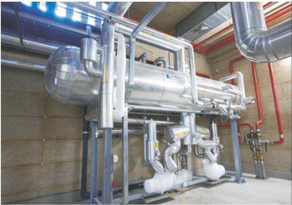

Industrial refrigeration on ammonia and glycol.
For industrial refrigeration we provide screw or piston compressors operating on ammonia (NH₃), R404A, R507 or CO₂, with glycol and alcohol as intermediate fluids. All plant is operated by PLC with computerised supervision. Above roughly 500 kW this is the architecture that wins on lifetime energy cost at Pakistan's 46–50 °C summer ambient.

The plant
Industrial refrigeration is built around screw or piston compressors. These operate with ammonia, R404A, R507 and CO₂, with glycol and alcohol used as intermediate fluids in the secondary circuit. Our refrigeration design team sizes the plant for reduced energy consumption and guarantees smooth operation under correct maintenance — the two things that decide whether a store is still economic in year fifteen.
Why indirect glycol-ammonia
Ammonia is the most thermodynamically efficient refrigerant available and it is free. What it is not is something you want distributed in quantity through an occupied building. An indirect glycol-ammonia design confines the ammonia charge to a compact plant room and circulates chilled glycol to the rooms, which is the practical route to NH₃ efficiency on sites where a large distributed charge is not acceptable — food plants, logistics facilities, anywhere with people working alongside the stores.
The trade is a few degrees of approach temperature against a far smaller charge, a shorter pipe inventory of ammonia, and a plant room that a technician can be trained to work in safely.
Controls and supervision
All equipment is operated by PLC with computerised supervision, which is what makes economical and optimised management possible rather than aspirational. Operating times, temperatures, priorities and alarms are held centrally, and the plant runs to a schedule rather than to whoever is on shift.
Reference — HAC Agri, 3,000 ton
Our largest ammonia-glycol design is the HAC Agri installation: an ammonia glycol refrigeration design for a 3,000-ton controlled atmosphere store, twenty rooms in two banks off a central corridor, with sorting and receiving areas, blast chillers, a dedicated control room and plant room. Zanotti equipment with stainless-steel plate evaporators for glycol-solution cooling.
Where it sits
Above roughly 500 kW, ammonia or ammonia-glycol is the answer. Between 200 and 500 kW the economics usually favour a rack system; below 200 kW a CDU pack. All three are covered under industrial & commercial refrigeration.

Questions buyers ask.
The technical and commercial questions we hear most often before a contract is signed.
01Is ammonia safe to use in a food facility?
02When does ammonia beat HFC on cost?
03Who services an ammonia plant in Pakistan?
04What refrigerants can the plant run?
Want a rough cost estimate? Sales-engineer tool, ±20% band.
Sales-engineer tool that combines sizing with cost output. Editable Izhar margin line. Pakistan-tuned across 12 cities and 24 commodities. Add CA-store equipment scope (nitrogen, ethylene removal, GAC analysis) to your cost estimate.
Open the rough estimator →